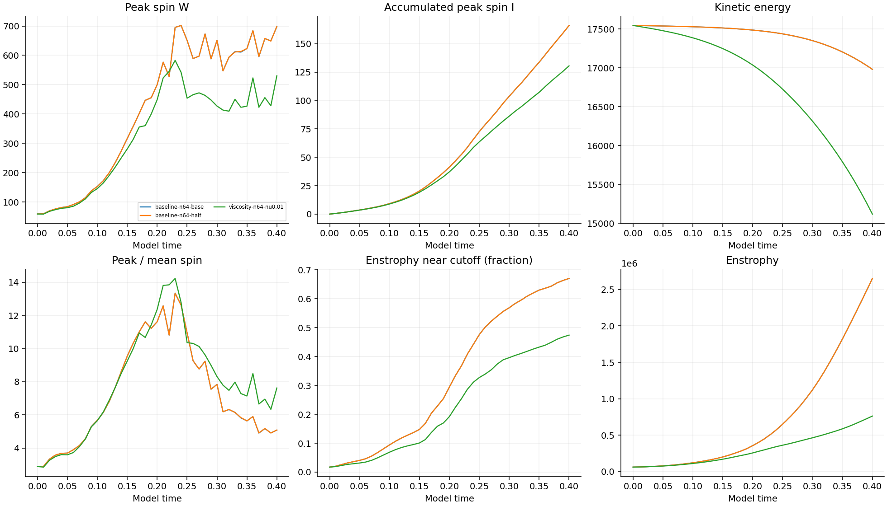
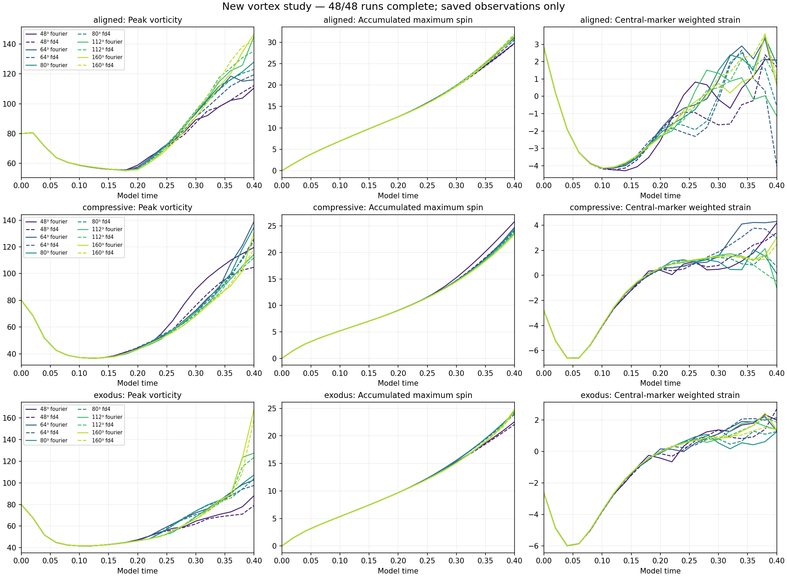
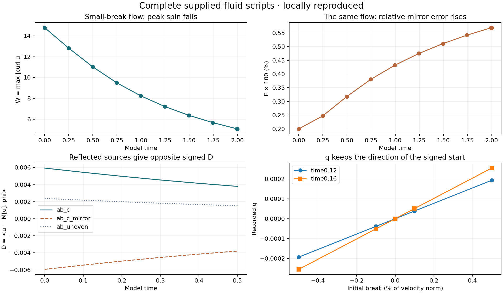
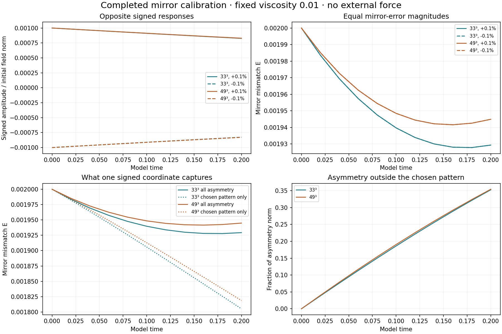

A hug that molds around an object
Computed filled material, yielding and fading imprint. Matched one-way and two-way Lorenz tests, numerical stress limits and raw data.
Results, methods and limitationsOne index for the fluid work, interactive illustrations, and conversation studies.
Published matrix status checked October 10, 2026: matched-stretch has 29/48 verified published results; the separate vortex matrix is complete at 48/48. Local calculations may be ahead of the published count. Read the linked study reports for their dates, controls and limitations.
Computed filled material, yielding and fading imprint. Matched one-way and two-way Lorenz tests, numerical stress limits and raw data.
Results, methods and limitationsStress tests, Lorenz-driven pressure and reciprocal opening comparisons. The coefficients and feedback rule are specified model choices, not a measured collective clay law.
Original reduced experimentGrid refinement and signed-geometry controls retain the uncertainty and failed screening thresholds. A robust predictive benefit is not established.
Three-question computational study with controls, raw outputs, uncertainty and sources. No new laboratory measurements.
Methods and reproductionAccuracy, conservation and stability; adaptive and alternating steps, Lorenz dynamics, limit cycles and synthetic pond forcing.
Baseline report · Methods and limits29/48 verified results published through model time 0.40. Spatial convergence remains unestablished; the raw strain is nonsmooth across periodic joins and initial maxima lie outside the central tube.

Historical preview; use the linked report for current published measurements.
All 48 runs reached model time 0.40. Final curves, comparisons and verification are published. Small timestep differences do not establish spatial convergence.

Four reproduced tests, measured spin and mirror symmetry, and runnable source.

20 completed runs with two grids, half timesteps and reflected starts.

Rotate the 3D field and play saved times. Aligned, reverse and departing surroundings.
Imported results, fixed thresholds, and what each numerical check measured.
The earlier ring calculation, grid comparisons, energy and time-step checks.
Compare the largest spin with its changing reference.
The earlier mirror and timed-envelope illustration; this is a separate prototype.
The illustrated join between flipped copies.
Explore the difference between a tall smooth peak and a corner.
The A/B/C conversation illustration.
Inspect categories, reply order and lengths.
Source-linked observations and conversation patterns.
Current repository review and priorities
File inventory and source hashes · Stress-test measurements · Math source and notes